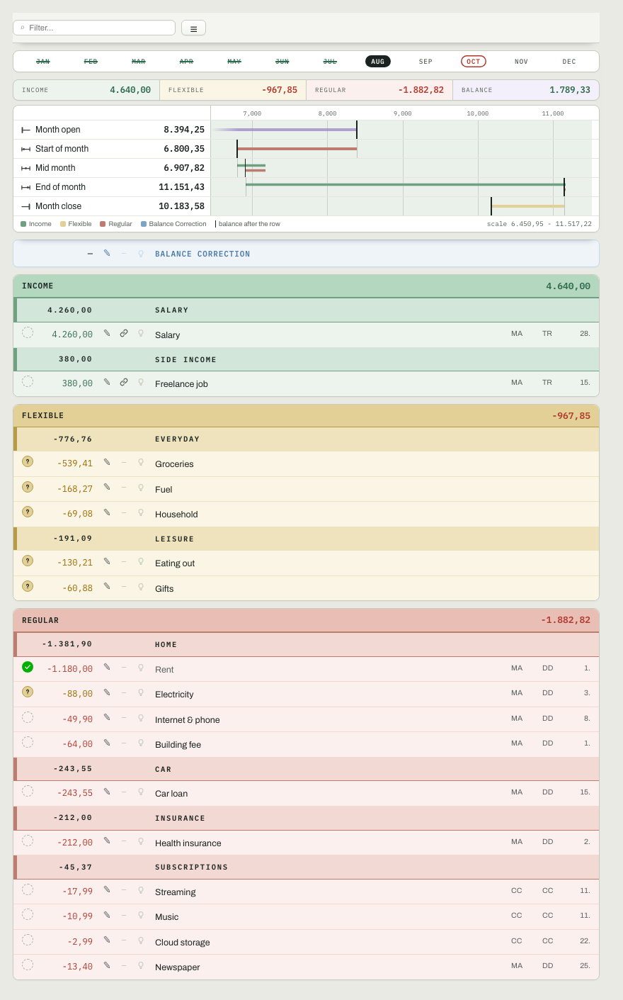
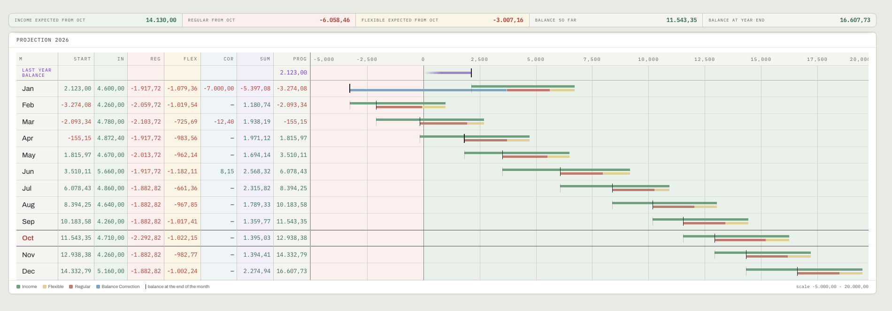

Zwölf Monate nebeneinanderTwelve months side by side
Ein Blick. Ganzes Jahr. Teure Monate sofort sichtbar.One look. Whole year. Expensive months stand out.
FINA ist ein Haushaltsbuch für ein ganzes Jahr: alle Einnahmen, alle Kosten, Monat für Monat im Voraus geplant.FINA is a household book for a whole year: all your income, all your costs, planned ahead month by month.
Jede Miete. Jedes Abo. Jede Rate. Und der Alltag dazu.
Das ganze Jahr im Blick — abgehakt, was bezahlt ist.Every rent. Every subscription. Every loan. Plus everyday spending.
The whole year at a glance — ticked off when paid.
Pilotphase: vollständig und kostenlos.Pilot phase: complete and free.
Die Jahresansicht, wie sie im Browser läuft — in Originalgröße, nicht verkleinert. Zieh im Bild oder auf der kleinen Karte: der Rahmen zeigt, wo du bist.The year view as it runs in the browser — at full size, not shrunk. Drag the image or the small map: the frame shows where you are.
ABHAKEN. VORAUSSCHAUEN.TICK OFF. LOOK AHEAD.
Einmal eingerichtet, kostet dich ein Monat ein paar Minuten: Was bezahlt ist, hakst du ab — und jeder Haken hebt die Jahresbilanz. Geschätzte Beträge stehen orange, bis die echte Zahl da ist.Once set up, a month takes you a few minutes: you tick off what is paid — and every tick lifts the year’s balance. Estimates stay orange until the real number arrives.

Abhaken heißt: erledigt, gezählt, sichtbar.Ticking off means: done, counted, visible.

Kredit und Abos laufen aus — und die Treppe zieht an. Genau das zeigt dir die Prognose.The loan and subscriptions run out — and the staircase picks up. That’s what the forecast shows you.
Mit Demo-Daten selbst durchklickenClick through it yourself with demo data →Alle Ansichten mit Bildern — die AnleitungEvery view with pictures — the guide →
VIER DINGE, DIE EIN RÜCKSPIEGEL NICHT KANNFOUR THINGS A REAR-VIEW MIRROR CAN’T DO
Ein Blick. Ganzes Jahr. Teure Monate sofort sichtbar.One look. Whole year. Expensive months stand out.
Jede Zahlung zeigt, wie lange noch. Grün heißt: bald frei.Every payment shows how long it runs. Green means: almost free.
Die Prognose rechnet vor. Du siehst die Lücke, bevor sie kommt.The forecast adds it up. You see the gap before it arrives.
Bezahlt: Haken. Geschätzt: orange. Offen: sichtbar.Paid: tick. Estimated: orange. Open: visible.
Alle Funktionen im EinzelnenEvery feature in detail →Der Vergleich mit anderenThe comparison with the rest →
DU BIST FRÜH DRANYOU ARE EARLY
FINA ist in der Pilotphase: alles ist freigeschaltet, und nichts davon kostet etwas. Was wir uns wünschen, ist deine Meinung — FINA fragt dich selbst, ein paar kurze Fragen im Programm, und du antwortest, wann es dir passt.FINA is in its pilot phase: everything is unlocked, and none of it costs anything. What we hope for is your opinion — FINA asks you itself, a few short questions inside the program, and you answer whenever it suits you.
WO ES FINA GIBTWHERE TO FIND FINA
FINA läuft vollständig im Browser, direkt unter dieser Adresse — nichts installieren, nichts anmelden. Chrome und Edge speichern sogar direkt in deine Datei zurück.FINA runs complete in the browser, right at this address — nothing to install, nothing to sign up for. Chrome and Edge even save straight back into your file.
Nichts installieren, nichts anmelden. Öffnen und loslegen.Nothing to install, nothing to sign up for. Open it and go.
Direkt öffnenOpen now →Dieselbe Adresse, eigenes Layout. Unterwegs nachsehen, was offen ist und wo du stehst — eingetragen wird am Rechner.Same address, its own layout. Check on the go what is open and where you stand — entering is done at the computer.
AnsehenTake a look →Die Apps für den Schreibtisch sind in Arbeit: gleiche Bedienung, dieselbe Datei. Sobald es sie gibt, stehen sie hier.The desktop apps are in the works: same feel, the very same file. As soon as they exist, they will be here.
In ArbeitIn the works